Mi nombre es Robinson José Cervantes Pacheco, tengo 20 años de edad
Nací en el municipio de Pivijay Magdalena el 03/05/2004
Terminé la secundaria en el año 2022
y actualmente me encuentro comenzando el primer semestre en el programa de
Ingeniería en software y datos en la universidad digital de Antioquia.
El hardware es la parte física de un ordenador o sistema informático
Está formado por los componentes eléctricos y electrónicos.
Electromecánicos y mecánicos. Tales como circuitos de cables y luz, placas.
Memorias, discos duros, dispositivos periféricos y cualquier otro material en estado físico.
Que sea necesario para hacer que el equipo funcione. En la actualidad, el hardware también lo hace.
Refreía a la parte física de equipos de diversa naturaleza. Como electrodomésticos.
Automóviles, teléfonos inteligentes, tablets, cámaras fotográficas, equipos electrónicos.
O piezas mecánicas, el primer ejemplo que se puede dar sobre hardware serían los ábacos, los cuales se están viendo desde los tiempos
después de Cristo, donde eran utilizados comúnmente para hacer recuento o inventario por los oficiales y por los comerciantes
Algunos ejemplos de Componentes del hardware incluyen:
Las compuertas lógicas son configuraciones electrónicas que generan un valor de salida en respuesta a una operación booleana
que se realiza con las entradas de la compuerta Básicamente, todas las compuertas lógicas tienen una salida y dos entradas,
algunas compuertas lógicas como la compuerta NOT o el inversor tienen solo una entrada y una salida Las entradas de las compuertas lógicas
están diseñadas para recibir solo datos binarios (bajo 0 o alto 1) >Las compuertas lógicas son circuitos electrónicos
conformados internamente por transistores que se encuentran con arreglos especiales con los que otorgan señales de voltaje
como resultado o una salida de forma boolean
La compuerta AND es una compuerta lógica digital básica que puede tener de dos entradas en adelante y
sólo una salida. Este circuito produce una salida ALTA (1) únicamente cuando todas sus entradas son 1
Sólo se obtiene una salida ALTA (1) si todas las entradas de la compuerta AND son ALTAS (1).
Si ninguna o incluso una de las entradas de la compuerta AND es ALTA, el resultado es una salida BAJA (0)
La compuerta OR es una compuerta lógica digital básica que puede tener de dos entradas en adelante y sólo
una salida. Este circuito produce una salida BAJA (0) únicamente cuando todas sus entradas son 0
Sólo se obtiene una salida BAJA (0) si todas las entradas de la compuerta OR son BAJAS (0).
Si alguna o incluso todas las entradas de la compuerta OR son ALTA, el resultado será una salida ALTA (1).
La compuerta NOT a diferencia de todas las demás puertas lógicas, sólo tiene una entrada y una salida.
Por lo tanto es la más simple de las puertas lógicas. Este circuito invierte la señal de entrada.
La compuerta NOT invierte la señal de entrada, así que una señal ALTA (1) se convierte en BAJA (0) y viceversa.
Esta compuerta realiza la función booleana de inversión o negación de una variable lógica
La compuerta NAND, también conocida como AND negada o inversa o NOT-AND, es una combinación
de las compuertas AND y NOT que se representa con la compuerta AND con un círculo a la salida
al tener sus entradas activas “1” la salida se encuentra inactiva “0”, otra variación
con respeto a las entradas mantendrá su salida en estado activo “1”Se puede representar mediante
un circuito con dos interruptores en serie y la lampara en paralelo, debemos recordar
que el flujo de corriente circula por dónde se tenga menor resistencia.
Git es un sistema de control de versiones gratuito y de código abierto, creado originalmente por Linus
Torvalds en 2005. A diferencia de los antiguos sistemas centralizados de control de versiones,
como SVN y CVS, Git está distribuido: cada desarrollador tiene el historial completo de su repositorio
de código de manera local. De este modo, la clonación inicial del repositorio es más lenta, pero las operaciones
posteriores, como commit, blame, diff, merge y log son mucho más rápidas.
Git incluye las funcionalidades de crear ramas y fusiones y reescribir historiales de repositorios, lo cual ha dado
como resultado muchas herramientas y flujos de trabajo innovadores y eficaces. Las solicitudes de incorporación de cambios
son una herramienta popular con la que los equipos pueden colaborar en las ramas de Git y revisar con eficacia el código de los demás.
Git es el sistema de control de versiones más utilizado en el mundo hoy en día, y se considera el modelo actual de desarrollo de software.
El control de versiones, también conocido como "control de código fuente", es la práctica de rastrear y gestionar los cambios
en el código de software. Los sistemas de control de versiones son herramientas de software que ayudan a los equipos de software
a gestionar los cambios en el código fuente a lo largo del tiempo. A medida que los entornos de desarrollo se aceleran, los sistemas
de control de versiones ayudan a los equipos de software a trabajar de forma más rápida e inteligente. Son especialmente útiles
para los equipos de DevOps, ya que les ayudan a reducir el tiempo de desarrollo y a aumentar las implementaciones exitosas.
Lo primero sería descargar GIT para esto. Dirígete a tu navegador de preferencia y busca git downloads.
Da clic en el primer resultado. Al entrar, debes escoger el sistema operativo con el que cuenta tu computador,
ya que hay diferentes opciones como por ejemplo Linux/Unix, Windows y macOS luego aparecerá un nuevo menú
en el que debes escoger cuál instalar, si el de (64 bits) o (32 bits), te recomiendo el de 64 bits con la versión
más reciente. Ya que cualquier computadora a partir de 2010 puede correrlo sin problemas luego de que se descargue,
te diriges a la carpeta donde se bajó y lo abres; así aparecerán configuraciones para tu git aquí deberás
escoger a tu discreción lo que necesites. Te recomiendo leer con atención las opciones.
Al finalizar las elecciones, te aparecerá una espera para la instalación de git, ya solo será esperar a que
termine y darle finalizar y escoger dónde abrir un informe sobre las distintas versiones que ha tenido git.
Lo primero que debemos realizar después de instalar nuestro git es una configuración inicial,
la cual será establecer nuestro alias o apodo, nuestro correo electrónico y el editor de código
que utilizaremos para configurar nuestro apodo o alias haremos lo siguienten.
para configurar nuestro correo haremos lo siguiente.
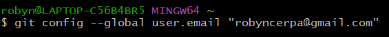Para seleccionar nuestro editor será así.
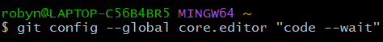 ya que esto será nuestra firma y también nos permitirá conectar nuestro git
a diferentes plataformas para realizar nuestros repositorios, los tres tipos más comunes de
jerarquías serían sistema, global, local siendo local el repositorio en el que se está trabajando,
global la configuración en general de todos los repositorios de un usuario y sistema
siendo la configuración de toda la computadora entre estos. Local tendrá la prioridad
en los repositorios, ya que la prioridad siempre será la más específica.
Un repositorio es un espacio centralizado donde se almacena, organiza, mantiene y difunde
información digital, habitualmente archivos informáticos, que pueden contener trabajos científicos,
conjuntos de datos o software. los repositorios tienen sus inicios en los años 90, en el área de la física
y las matemáticas, donde los académicos aprovecharon la red para compartir sus investigaciones con otros colegas.
Este proceso era valioso porque aceleraba el ciclo científico de publicación y revisión de resultados.
Lo primero que debemos hacer para crear un repositorio es movernos a la ruta donde se quiere crear.
Generalmente, se utiliza él (cd) para movernos entre carpetas hacia adelante y (../) para retroceder
entre carpetas. En caso de que deseemos crear una nueva carpeta, lo primero es elegir la localización donde
se va a crear, por ejemplo, en el disco local (G), que sería (cd g:) y para crearla sería (mkdir seguido el nombre).
Para eliminar la carpeta creada es (rmdir seguido el nombre) Después de haber escogido el lugar y haber creado nuestra
carpeta, nos posicionamos en ella e iniciamos git con el comando.(git init)
si deseamos ver qué archivos tenemos dentro de una carpeta, podemos utilizar el comando (ls)
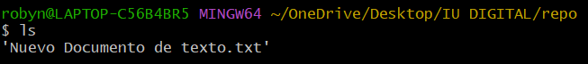comando (cd) para movernos entre carpetas pero hacia adelante
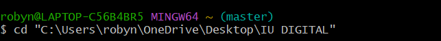para crear una nueva carpeta utilisamos el comando (mkdir seguido el nombre)
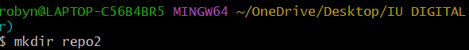y con el comando (rmdir seguido el nombre) eliminamos la carpeta
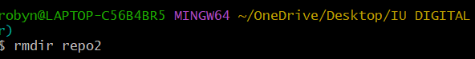Ya después de haber creado nuestra carpeta e iniciado nuestro git agregando su contenido, subimos nuestro archivo
a nuestra área de trabajo con el comando (git add seguido el nombre del archivo) y si nos hemos equivocado
en el momento de subirlo utilizamos el comando (git rm --cachec seguido el nombre del archivo) para removerlo
y corregirlo bueno ha llegado el momento de subir nuestro archivo a nuestro repositorio para esto utilizamos
el comando (git commit -m "texto corto") si después de haber subido tu archivo por alguna razón desear recuperar
ese archivo puedes utilizar el comando ( git checkout "nombre del archivo") ya sea sobreescribiéndolo o restaurándolo
para checar los cambios que has hecho puede utilizar el comando (git status) o (git status) tambiem puedes utilizar el comando (git log)
para ver el hitorial de commic que has realizado.
Comando (git status)
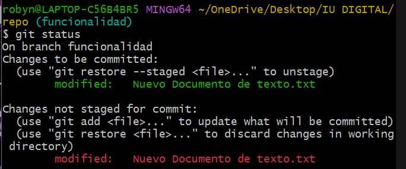comando (git add "nombre")
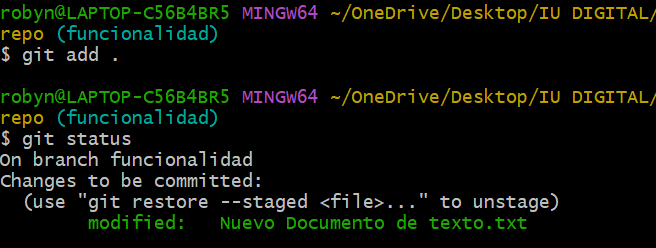Comando (git commit -m "comentario")

Comando (git log)
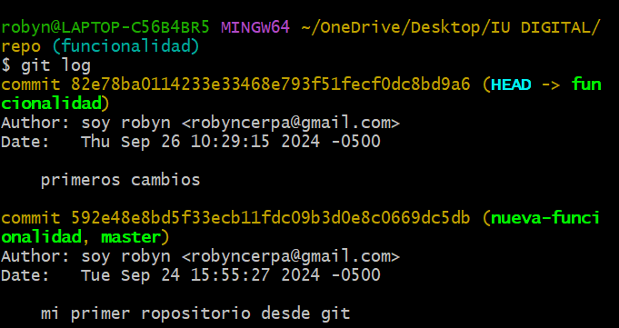En Git las Ramas son espacios o entornos independientes para que un Desarrollador sea Back-end, Front-end,
Tester, etc. pueda usar y así trabajar sobre un mismo Proyecto sin chancar o borrar el conjunto de archivos
originales del proyecto, dándonos flexibilidad para desarrollar nuestro proyecto de manera mas organizada.
Cada Rama o Branch que creamos con Git, esta compuesta por un archivo compuesto de 40 caracteres.
Por defecto Git le asigna el nombre de master a la primera Rama que se crea al ejecutar el comando git init
para crear un nuevo repositorio, los usuarios no se molestan en cambiarle este nombre, En la actualidad
las Ramas son usadas con el repositorio Github que es en donde se almacenan los archivos de un determinado
proyecto, estos pueden guardarse de manera Pública o Privada, Github almacena un historial de cambios
que se lleven a cabo en el proyecto generalmente las ramas se utilizan para desarrollar una nueva funcion sin
interferir en el codigo que ya tienes tambien las puedes utilizar para probar nuevas ideas sin comprometer tu
trabajo anterior y tambiem puede fasilitar la colaboracion de multiples desarrolladores en diferente ramas
asi mismo fasilitando el trabajo
Para crear una nueva rama podemos utilizar el comando (git checkout -b "seguido el nombre")
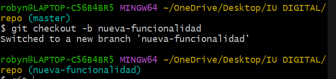para ver las diferentes ramas que tienes puede utilizar el comando (git branch)
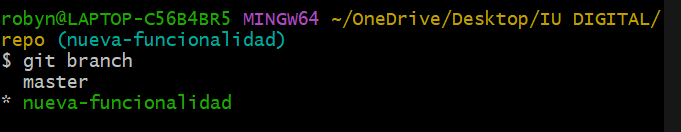cuando hayas terminado de trabajar en tu rama puedes fisionarla con la principal para ello utilizaremos
el comando (merge "seguido el nombre de la rama")
Los repositorios remotos son versiones de tu proyecto que están hospedadas en Internet
o en cualquier otra red. Puedes tener varios de ellos, y en cada uno tendrás generalmente
permisos de solo lectura o de lectura y escritura. Colaborar con otras personas implica
gestionar estos repositorios remotos enviando y trayendo datos de ellos cada vez que necesites
compartir tu trabajo. Gestionar repositorios remotos incluye saber cómo añadir un repositorio remoto,
eliminar los remotos que ya no son válidos, gestionar varias ramas remotas, definir si deben rastrearse o no y más
en Resumen el sistema de control distribuido de versiones Git se ha convertido en una herramienta esencial para manejar
proyectos de software. Uno de los motivos de la creeciente popularidad de Git es el éxito de GitHub, una
plataforma Web de desarrollo colaborativo basada Git
GitHub es un servicio comercial que permite el alojamiento y desarrollo de repositorios con control
de versiones y mecanismos de Colaboración para el desarrollo de proyectos conjuntos desde cualquier sitio.
GitHub proporciona una interfaz Web que permite al usuario registrado crear repositorios vacíos o por clonación
de otro repositorio hospedado en GitHub (fork en la nomenclatura de GitHub), enviar solicitudes de cambio
en repositorios hospedados (pull request), y gestionar dichas solicitudes además, los repositorios hospedados
en GitHub pueden actuar como repositorios remotos de repositorios locales. Los repositorios que se crean
en GitHub son por defecto de acceso público. Solo mediante una cuenta de pago o si cumplen ciertas condiciones
es posible alojar repositorios privados, Cada repositorio de GitHub es propiedad de una cuenta de usuario
o de organización. Las modificaciones a un repositorio alojado en GitHub solo se pueden realizar por usuarios
que han iniciado sesión y que estén autorizados a modificar su contenido, o a aquellos autorizados que
han configurado un repositorio local de Git para que con las credenciales proporcionadas por GitHub pueda conectarse
a dicho repositorio. Además del alojamiento, GitHub proporciona a cada repositorio una wiki, un gestor de tareas (issues),
un completo sistema de gestión de comentarios, un cuadro de control con grafos sociales e, incluso, una página web propia.
En el campo educativo GitHub ha creado cuentas de usuario especiales para profesores, estudiantes y centros educativos, agrupadas
en el proyecto GitHub Classroom
Para iniciar con nuestro repositorio, comenzamos por iniciar sesión en nuestra cuenta de GitHub y dar cjic en el botón +
en la equina superior derecha y seleccionar la opción que dice "nuevo repositorio", completar el formulario y dar clic en crear
repositorio y abres la terminal te diriges a tu repositorio local con el comando (cd "ruta del repositorio") también puedes iniciar
un nuevo repositorio con el comando (git init) luego sería conectar tu repositorio local con el remoto en GitHub con el comando
(git remote add origin https://github.com/tu usuario/tu repositorio.git para verificar que tu repositorio se haya conectado utiliza
(git remote -v) con esto sele muestra la URL y fecha si haces cambios y los confirmas utiliza el comando (git add . commit -m "comentario
cobre los cambios") ya para finalizar y subir tus cambios al remoto utiliza ( git push -u origin máster) si estás trabajando en una rama
utiliza (git push -u origin " nombre de la rama") Y eso es todo Ahora tu repositorio local está conectado al remoto en GitHub.

Utiliza los shuientes comandos para conectar tus repositorios
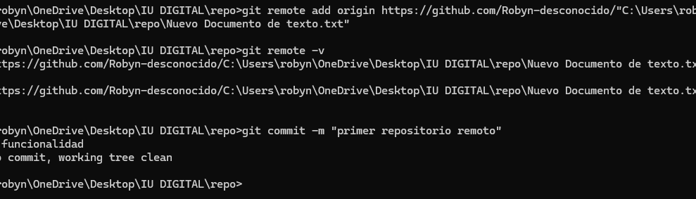